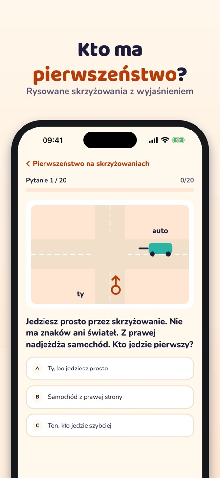
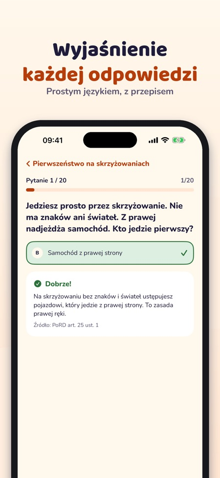
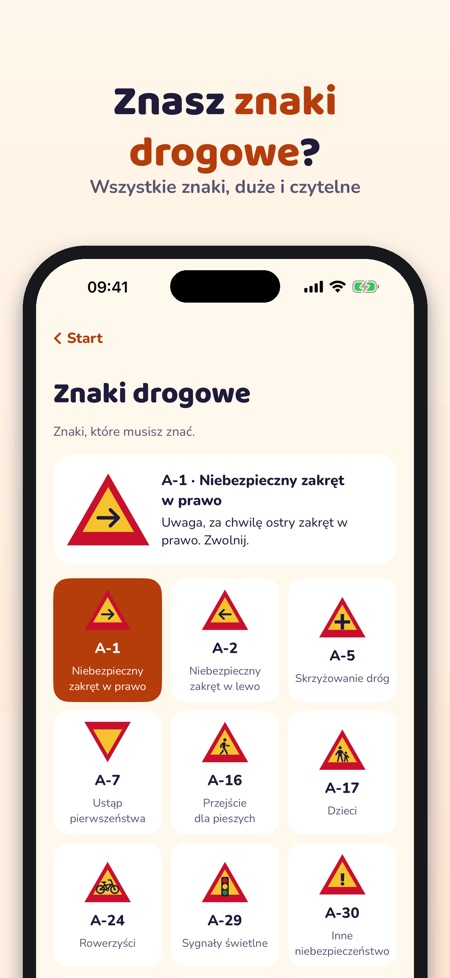

Egzamin na kartę rowerową. Ćwicz do egzaminu na kartę rowerową: pytania z wyjaśnieniem, skrzyżowania, znaki drogowe i egzamin próbny – na wesoło, jasno i bez internetu.



Verkeersheld pomaga dzieciom przygotować się do egzaminu na kartę rowerową – skrzyżowania, znaki i przepisy wyjaśnione prostym językiem.
20 pytań, znaki drogowe, słownik i listę kontrolną możesz używać bez zakupu. Pełna wersja to jednorazowy zakup, który odblokowuje wszystkie pytania, egzaminy próbne i statystyki. Bez subskrypcji. Zakup i linki poza aplikację tylko przez rodzica (kontrola rodzicielska).
Verkeersheld jest niezależny i nie przeprowadza egzaminów. Egzamin zdajesz w szkole. Aplikacja nie zbiera danych i nie ma reklam.